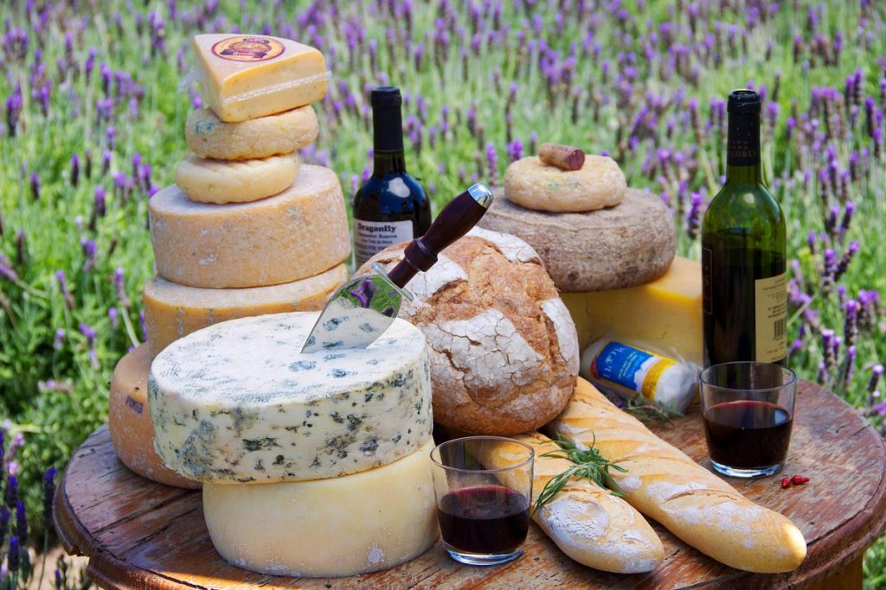

Uno de los platos más emblemáticos de Querétaro es el "queso y vino", una deliciosa combinación de queso añejo, preferiblemente del tipo manchego, acompañado de vino de la región. Esta tradición se remonta a la época colonial, cuando los franciscanos introdujeron la viticultura en la región y comenzaron a producir vino de alta calidad que se maridaba perfectamente con el queso local.

Es un bello Pueblo Mágico de Querétaro en donde resalta a la vista la Peña de Bernal con 350 metros de altura y 10’000,000 de años de antigüedad, es el tercer monolito más grande del mundo, junto con sus calles empedradas, restaurantes, museos y sus casas coloridas que complementan el lugar. Todo este conjunto lo vuelve el mejor lugar para escaparse de la rutina y poder descansar, explorar y divertirse sin preocupaciones.

Notas relevantes:
En el corazón de México, el estado de Querétaro se destaca por su rica herencia
arquitectónica colonial, que se extiende a lo largo de sus encantadoras ciudades y pueblos. Sin lugar a dudas,
la capital del estado, Querétaro, es el epicentro de esta herencia histórica.
Caminar por las calles empedradas de Querétaro es como dar un paseo por el pasado. La ciudad está adornada
con una impresionante variedad de edificios coloniales, cuyas fachadas coloridas y detalladas exudan encanto y
autenticidad. La arquitectura colonial se manifiesta en majestuosas iglesias, como el imponente Templo de Santa
Rosa de Viterbo, una joya barroca del siglo XVIII con una fachada adornada con esculturas y relieves
intrincados.